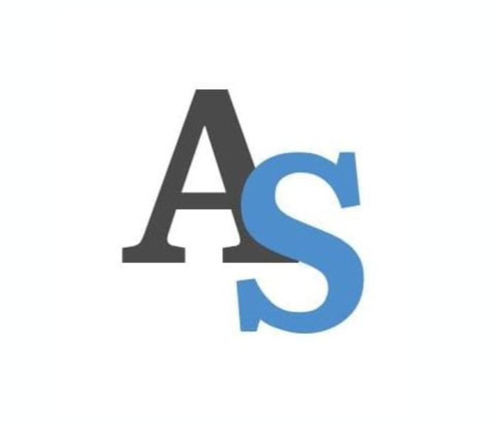

Digital Zenith
A Digital Zenith é especialista em manutenção digital, oferecendo serviços preventivos e corretivos para garantir o máximo desempenho dos seus equipamentos. Com foco em tecnologia de ponta e atendimento personalizado, somos parceiros confiáveis para empresas que buscam qualidade e eficiência.

Assistec
A Assistec é referência em soluções tecnológicas, especializada em suporte técnico e manutenção de hardware e software. Comprometida com a inovação, oferece atendimento rápido e eficaz, auxiliando empresas a manter seus sistemas sempre atualizados e operacionais.